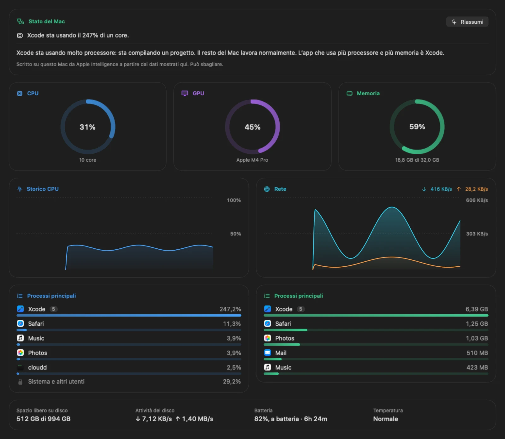
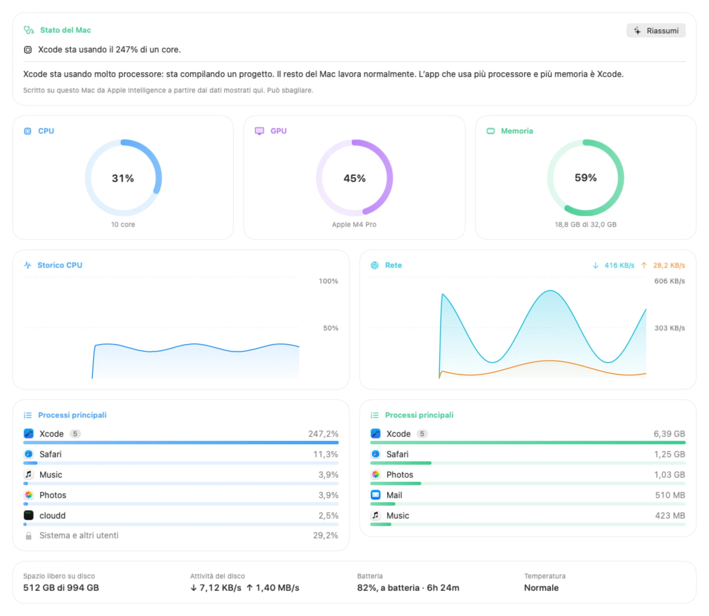
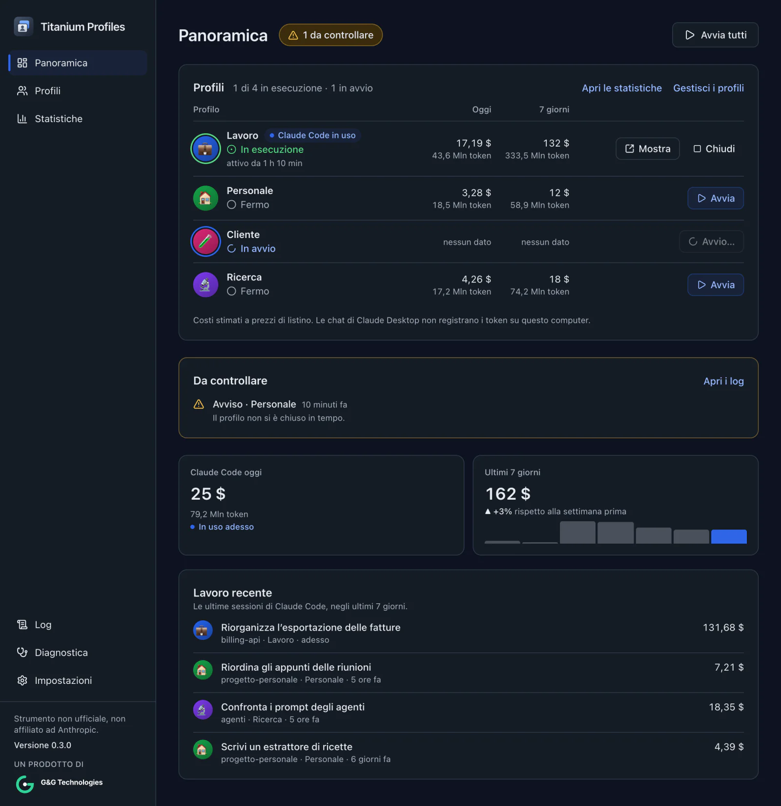
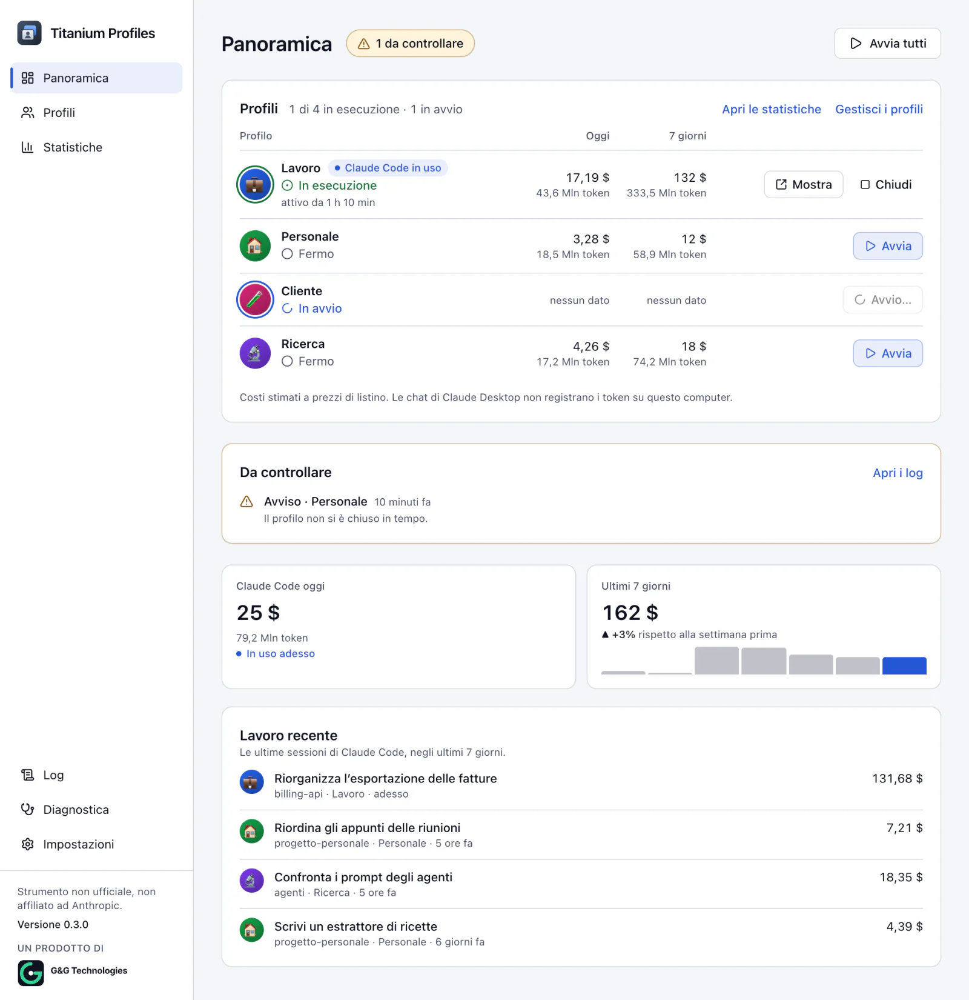

Titanium AI è un motore per Mac che esegue i modelli linguistici in locale, su Apple silicon. È costruito attorno alla memoria unificata per rispondere presto occupando poca memoria, e offre un'API compatibile con OpenAI: le conversazioni restano sul Mac.
Cosa fa →
Titanium Fences controlla che cosa esce dal computer verso i servizi di intelligenza artificiale. Lascia passare solo le destinazioni autorizzate, blocca le altre e tiene un registro permanente di ogni decisione, senza registrare i contenuti. Prima che un documento o una chat arrivino a un modello remoto, nell'UE, negli USA o in Cina, sostituisce in automatico i dati sensibili e riservati con segnaposto, per ridurre l'esposizione dei dati personali.
Cosa fa →


Titanium Monitor tiene d'occhio la salute del Mac dalla barra dei menu. Mostra come vengono usati CPU, GPU, memoria, rete e disco, e per ogni processo quanto traffico invia e verso dove, così si vede se un programma comunica con l'esterno quando non ve lo aspettate. Dice con parole semplici che cosa appesantisce il sistema e libera lo spazio occupato da cache e residui, sempre attraverso il Cestino.
Gratuita, anche nelle versioni future.
Cosa fa →


Titanium Profiles tiene affiancati più account di Claude Desktop sullo stesso computer, per esempio uno aziendale e uno personale. È utile anche con un solo account: le statistiche stimano, ai prezzi di listino delle API di Anthropic, quanto costerebbe il vostro uso di Claude Code senza la tariffa fissa dell'abbonamento.
È uno strumento non ufficiale, non affiliato ad Anthropic. Non modifica mai Claude Desktop e non legge mai le credenziali. Non filtra né monitora i dati scambiati con Claude: per questo serve Titanium Fences.
Cosa fa →